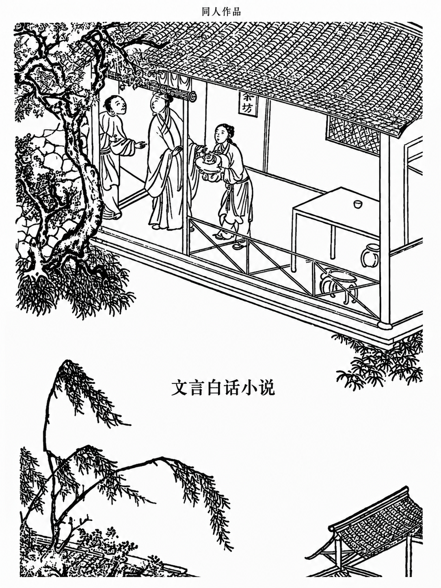
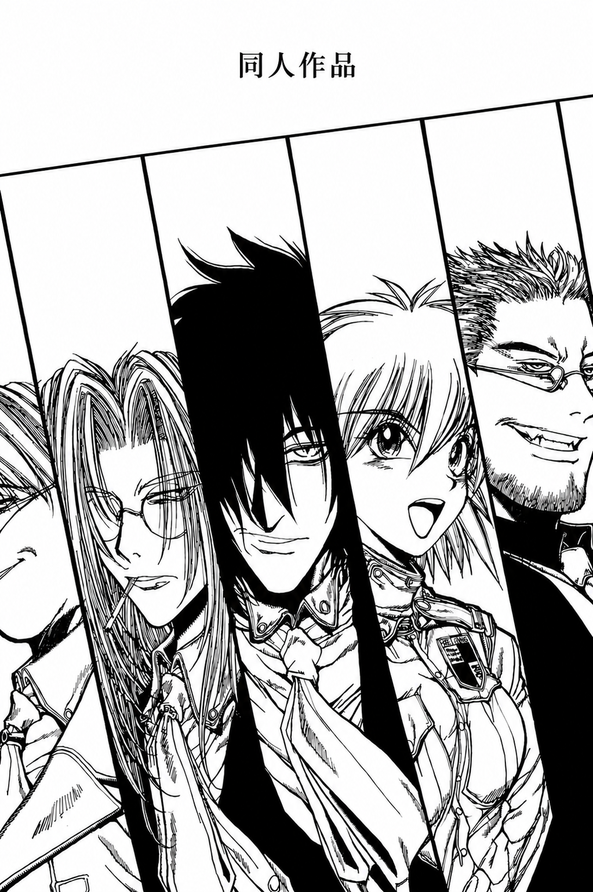

《光门》
或许发生了一场地震，或者什么其他的大灾害。总之，当两个人醒来的时候，四周黑漆漆的，什么也看不见。男的率先反应过来身边还有一个人。他试着推了推女的。女的抓住他的手很轻地喊了一个名字。“不是，我叫安德森。我们被困在这儿了。”
点击下载Modern Fiction
或许发生了一场地震，或者什么其他的大灾害。总之，当两个人醒来的时候，四周黑漆漆的，什么也看不见。男的率先反应过来身边还有一个人。他试着推了推女的。女的抓住他的手很轻地喊了一个名字。“不是，我叫安德森。我们被困在这儿了。”
点击下载一热。海燕感到自己脸上麻麻痒痒的，口水越过下颚线一直流到脖子上。如果没有闹钟，醒来就是这样一个过程，睡得太多反而让身体分泌出足够多的油脂，混合着汗糊在脸上。睁开眼睛，阳台上透过来的昏黄阳光告诉海燕，现在绝对是下午四点以后了。
点击下载（一）“那你愿意拿十年寿命去换吗？”我滔滔不绝的演讲戛然而止。新来的转校生突然回头，黑色的碎发挡住了他的眼睛，但我仍然确信自己看到了一闪而过的狡黠。老旧的空调和挥发的汗水让教室里变得有些潮湿，这种环境最容易培育的是故事。
点击下载Classical Vernacular

却说那潘金莲被武松拿长刀剜了心口，割下头来，血染武大灵牌，虽说是香消玉损，也算一命还一命，恩怨终了，彼此两清。潘金莲虽已亡身，竟还存有五感，只觉浑身轻飘飘纸一样薄，原来是五魂七魄马上要离体而去。
点击下载Fan Fiction

“女警，女警，快醒醒！”塞拉斯还在做跟队长抢夺美味冰淇淋的梦，眼看着抢到手刚要舔一口，就被这粗鲁的男声打断了。“嗯？”塞拉斯睡眼惺忪地四处望了望，除了已经去世的沃尔特和因特古拉，以及神出鬼没的 master，没人会大清早来扰她清梦。
点击下载